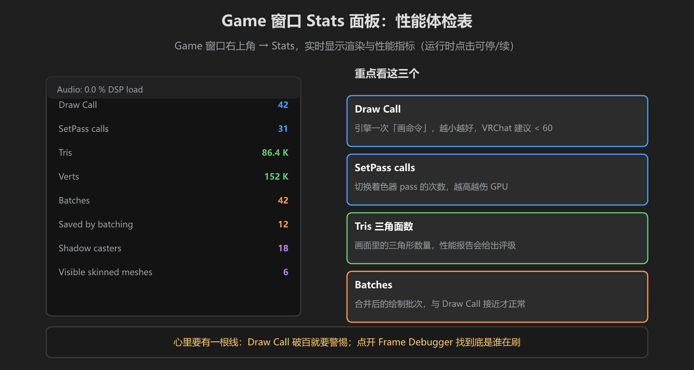
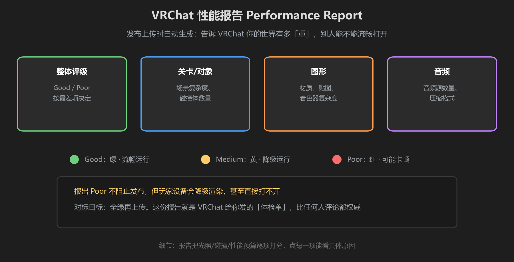
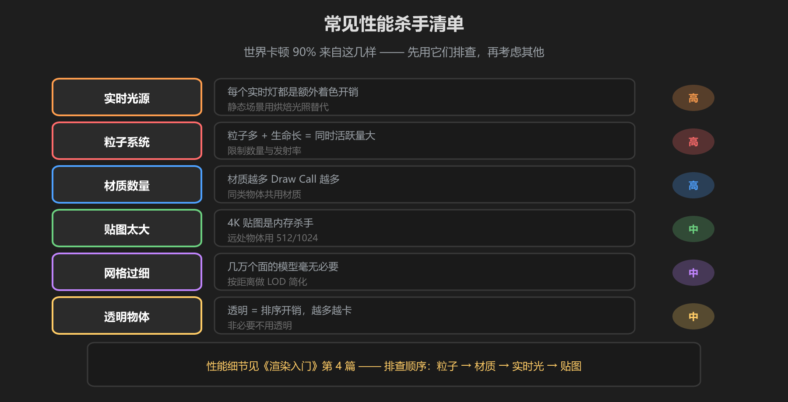

第 3 篇：性能检查 — Stats 面板、Frame Debugger、性能报告
「我能跑 120 帧」不代表玩家能跑。VRChat 玩家设备五花八门，本篇教你用数据而不是感觉判断世界卡不卡。
1. Game 窗口 Stats 面板：性能体检表

图：Game 窗口右上角 → Stats，实时显示渲染指标
在 Game 窗口标题栏点 Stats（或 Game 视图右上角），弹出实时面板。重点看三个：
- Draw Call：引擎一次「画命令」，越小越好，VRChat 世界建议控制在 60 以下
- SetPass calls：切换着色器 pass 的次数，越高越伤 GPU，理想 20 以下
- Tris / Verts：当前画面的三角面与顶点数，VRChat 性能报告会据此评级
Draw Call 破百就要警惕：先用下面第 2 节的 Frame Debugger 找到「谁在刷」，再对症下药 —— 而不是瞎删东西。
2. Frame Debugger：找到卡顿元凶
菜单 Window → Analysis → Frame Debugger，运行中打开，点击 Enable 冻结一帧，左侧是这一帧的每一个绘制调用：
- 点开任意一个 Draw Call，右侧显示它绘制的是哪个物体、什么材质
- 从头翻到尾，找「重复出现同一物体/材质」的 —— 那就是 Draw Call 的制造者
- 同一个物体被多个相机/阴影/透明渲染重复绘制时，也能在这里看见
阴影是隐形杀手：Frame Debugger 里常能看到一个物体被画 3-4 次（正常 + 阴影 + 反射）。实时光源越多，重复越多 —— 详见《渲染入门》第 4 篇的光照优化。
3. VRChat 性能报告：官方体检单

图：上传时自动生成 —— 关卡/对象/图形/音频逐项评级
执行 Build & Test 或 Publish 时，VRChat SDK 会自动生成一份性能报告（Performance Report）：
- Good（绿）：流畅运行，目标状态
- Medium（黄）：会降级渲染（去掉部分效果）
- Poor（红）：可能卡顿，甚至部分玩家打不开
报出 Poor 不阻止发布，但体验会差。它从光照、碰撞体、音频、对象复杂度等多维度打分，点每一项能看到具体原因和建议。
4. 常见性能杀手清单

图：实时光源 / 粒子 / 材质数 / 贴图大小 —— 排查卡顿按这个顺序来
| 杀手 | 为什么伤 | 对策 |
|---|---|---|
| 实时光源 | 每个实时灯都要额外算一次阴影和光照 | 静态场景用烘焙光照，少用实时灯 |
| 粒子系统 | 粒子数量 × 存活时间 = 同时活跃的粒子总量 | 限制发射率和存活时间 |
| 材质数量 | 材质越多 Draw Call 越多 | 同类物体共用材质（Atlas 合并） |
| 贴图太大 | 4K 贴图是显存/内存杀手 | 远处物体用 512/1024，压缩格式 |
本篇只讲「怎么发现和判断」，具体怎么优化（烘焙、LOD、图集）是《渲染入门》第 4 篇的内容 —— 测出问题后去那里翻解决方案。
学前检查清单
- 会打开 Stats 面板并读出 Draw Call / Tris
- 会用 Frame Debugger 定位「谁在刷 Draw Call」
- 能看懂 VRChat 性能报告的 Good / Medium / Poor
- 记住了四大性能杀手（实时光/粒子/材质/贴图）